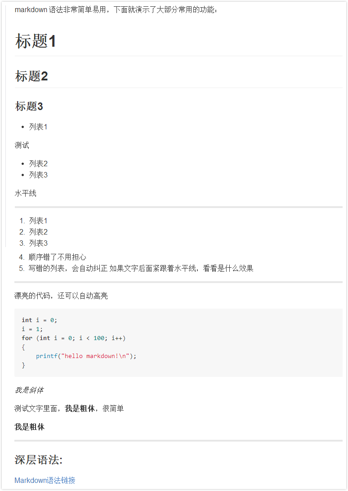

Markdown语法
Markdown 语法非常简单易用，下面就演示了大部分常用的功能：
# 标题1
## 标题2
### 标题3
- 列表1
测试
- 列表2
- 列表3
水平线
---
1. 列表1
2. 列表2
3. 列表3
5. 顺序错了不用担心
3. 写错的列表，会自动纠正
如果文字后面紧跟着水平线，看看是什么效果
---
漂亮的代码，还可以自动高亮
```cpp
int i = 0;
i = 1;
for (int i = 0; i < 100; i++)
{
printf("hello markdown!\n");
}
```
*我是斜体*
测试文字里面，**我是粗体**，很简单
__我是粗体__
---
### 深层语法:
[Markdown语法链接](https://stackedit.io/editor#)
如图： 